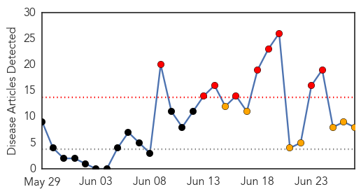

30 Day Trends
Web: 9 alerts, 7 warnings
Twitter: 0 alerts, 0 warnings
Top Articles:
- 0.996
- Jamaica on high alert for chikungunya virus
- 0.995
- A Second Case of Travel-Related Chickungunya in North Carolina
- 0.993
- First case of chikungunya confirmed in Manatee County
- 0.985
- News Scan for Jun 26, 2014
- 0.984
- Chikungunya Virus Latest
- 0.960
- Suspected chikungunya case under investigation in Randolph Co.
- 0.894
- First Case of Chikungunya Virus Suspected in West Virginia
- 0.626
- 7 News Belize
Top Tweets:
-
No tweets found for Jun 27, 2014
Web/News Articles
Tweets

Article Locations

Article Confidences